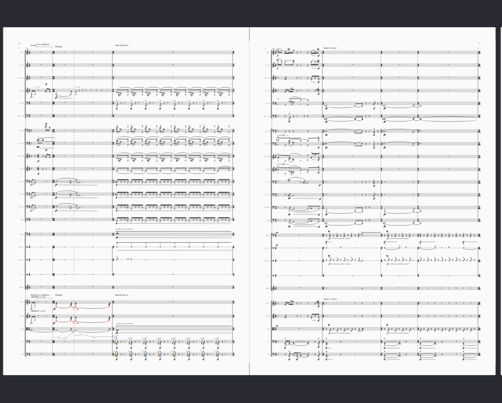

制作物デモ
学内で開発、研究を行っていたシステムをご紹介するページです。
●自動作曲システムMatrix Project
▽動画デモはこちら(音楽が流れます)
▲これは何？
Matrix Projectは、中西健太朗個人によって開発されている自動作曲のためのソフトウェアです。
▲どんなことができるの？
- 音階
- 楽器法
- 音色
- 時間発展
MIDI楽譜データ・WAV音声データの形式で、
それらのパラメータに基づいた新しい音楽を生成することができます。
▲どんなことに利用できる？
このソフトは、オーケストラのための音楽の制作の過程で、
作曲補助ツールとして開発されたソフトです。
生成された音楽をコンピュータ上で再生して聴いて楽しむことはもちろん、
人間によるオーケストラや室内楽などの音楽のための作曲支援に用いることができます。

▲Matrix Projectを用いた音楽制作
▲一般の人にも使える？
2023.4.現在、一般の方向けのGUIは提供しておりません。
コードは
https://github.com/kentaro-nakanishi/Matrix_Project
にて公開されているため、PCをお持ちの方はご自身の環境で動かすことができます。
手順
- 上のGitHubのリンクよりフォルダをローカルにクローンし、
- requirements.txtに従って必要なライブラリ等をインストールして下さい。
- main.pyを実行すると、音楽(MIDI楽譜データ)が生成されます。
- tree_config.pyより、詳細に音楽がコントロールできます。